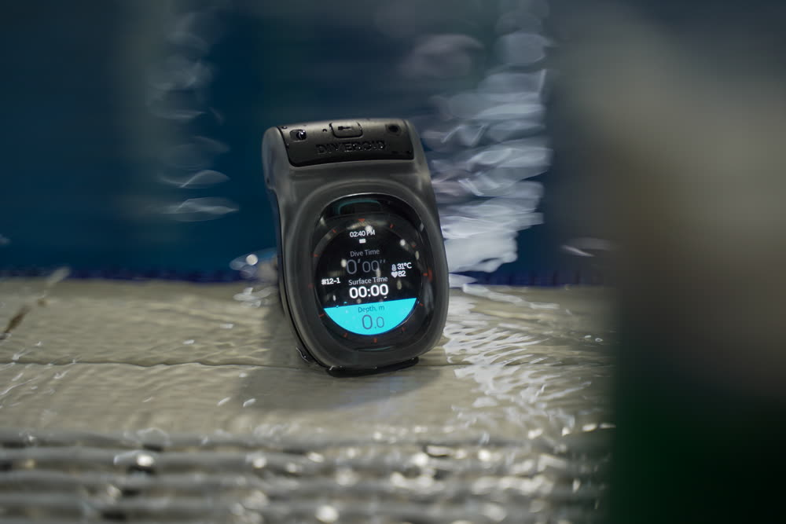
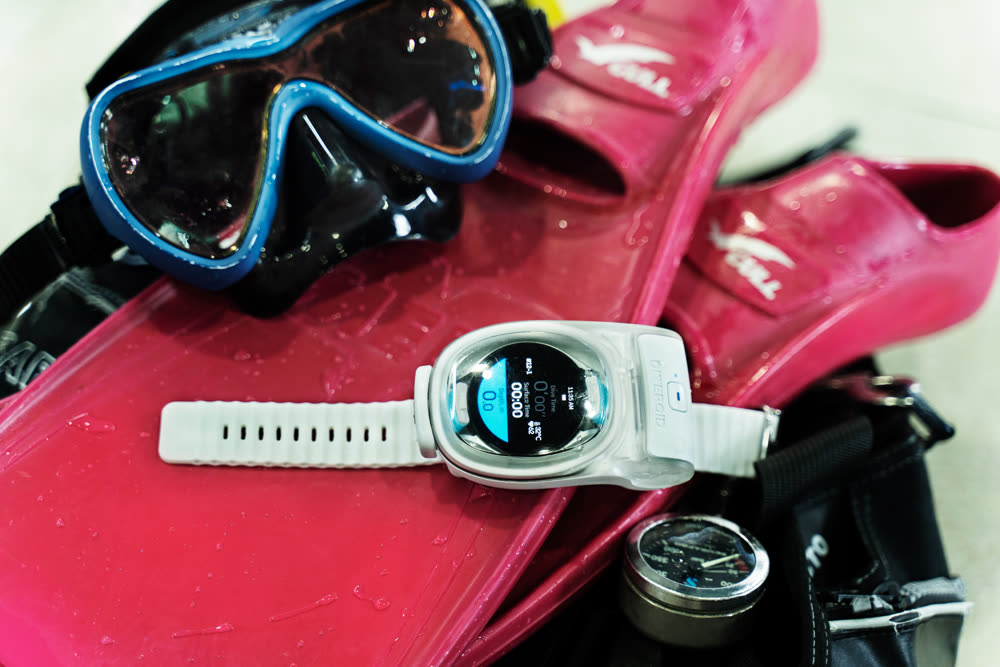
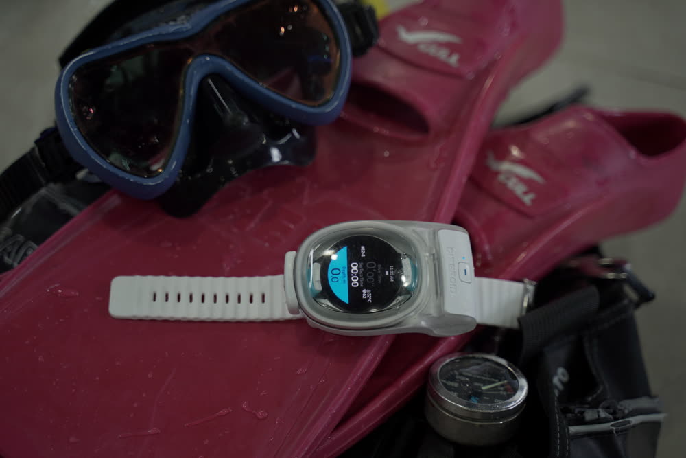
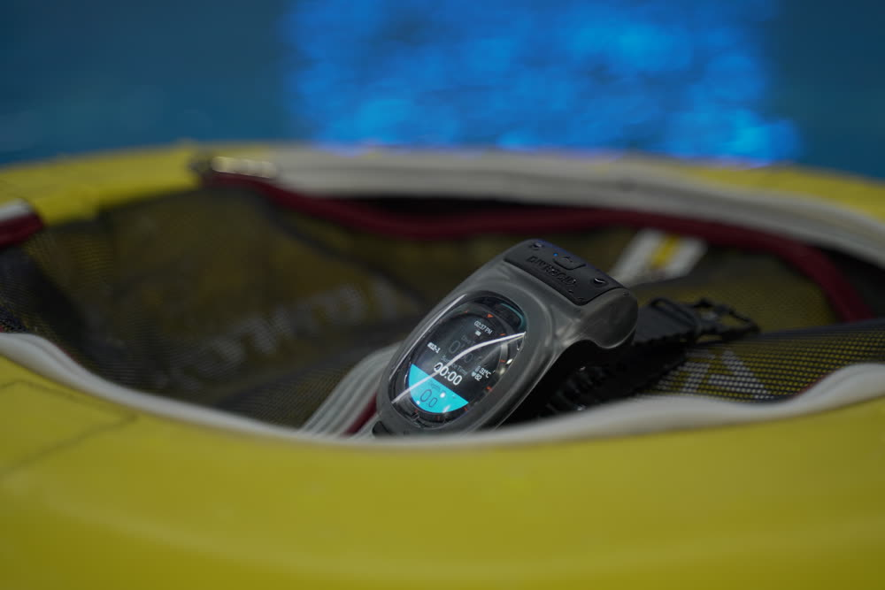
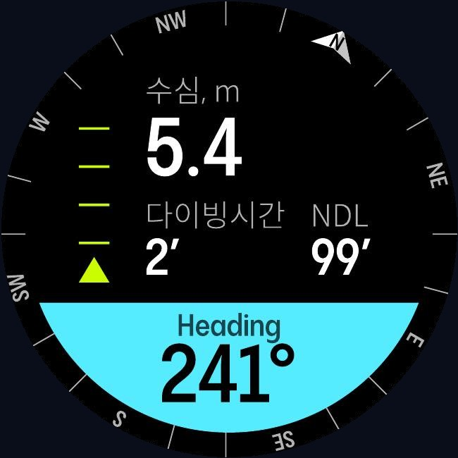
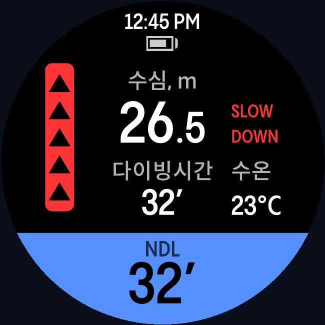
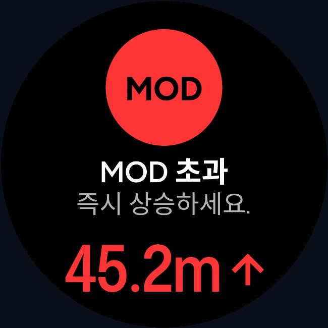
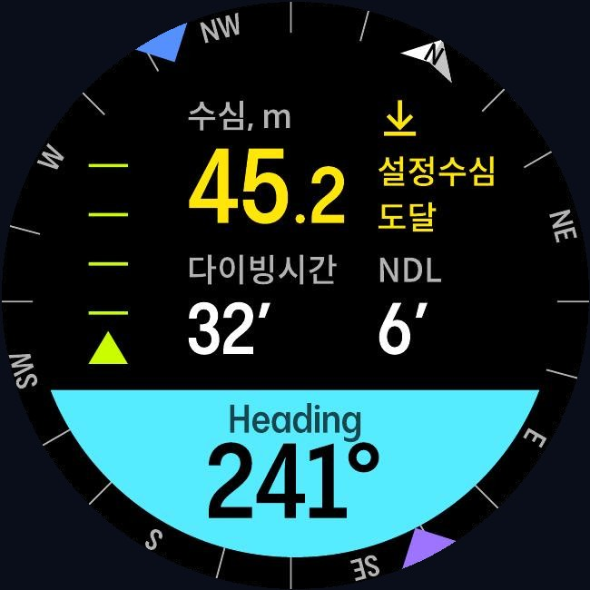
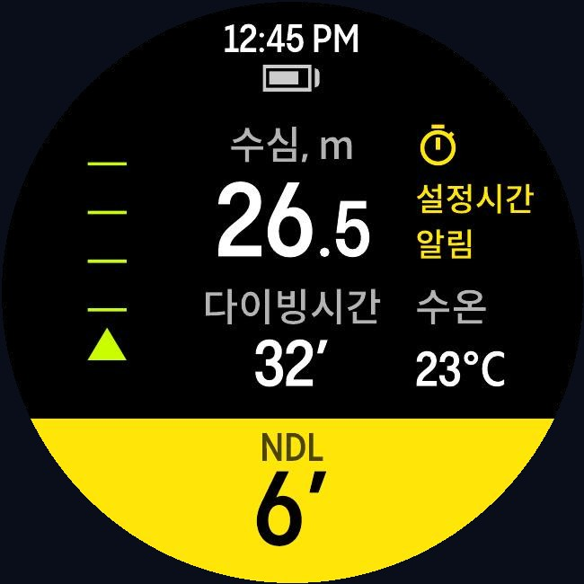
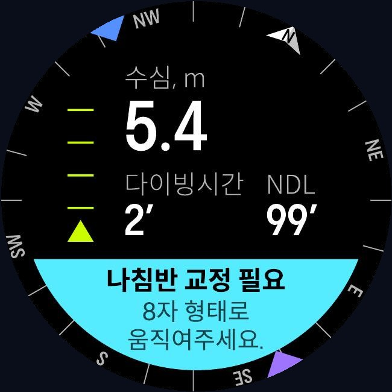

Watch Dive
01 · Introduction
Watch Dive란?
Watch Dive는 이미 가지고 계신 스마트워치(애플워치·갤럭시워치·픽셀워치 등)를 다이빙 컴퓨터로 사용할 수 있게 해주는 방수 하우징 + 전용 앱 솔루션입니다. 전용 다이브컴퓨터를 새로 구입하지 않아도, 익숙한 워치로 수심·다이빙 시간·안전 정지·로그북을 관리할 수 있습니다.
- 다이빙 입문자를 위한 가장 합리적인 다이브컴퓨터 솔루션
- 수심 · 다이빙 시간 · NDL · 나침반 · 안전 정지 안내
- 다이빙이 끝나면 자동으로 로그북 기록
- 스쿠버 다이빙 & 프리다이빙 모두 지원

Watch Dive는 다이빙을 보조하는 도구이며, 다이빙 교육·자격증·백업 다이브컴퓨터를 대체하지 않습니다. 반드시 정규 교육을 이수하고 안전 수칙을 지켜 다이빙하세요.
02 · Compatibility
호환 기기 확인
Watch Dive는 두 가지 방식으로 사용합니다. 내 워치가 어디에 해당하는지 먼저 확인하세요.
| 방식 | 대상 워치 | 구성 |
|---|---|---|
| 앱만 (App Only) |
Apple Watch Ultra 1 · 2 · 3 (자체 수압센서 + 40m 방수 내장) |
DIVEROID 앱만 설치 |
| 하우징 + 앱 | Apple Watch Series · SE, 갤럭시 워치 전 모델(Ultra 포함), 구글 픽셀 워치, 기타 Wear OS 워치 | Watch Dive 하우징 + 앱 |
하우징을 사용하는 경우, 워치가 하우징 내부 공간 48.93 × 49.33 × 15.41mm (가로×세로×깊이) 이내여야 합니다. 자체 OS를 쓰는 일부 워치(Garmin · Suunto · Fitbit · Amazfit · Huawei 등)는 앱 설치가 불가해 지원되지 않습니다.
정확한 모델별 호환 여부는 guide.diveroid.com/watch-compatibility.html 에서 확인하세요.
03 · What's in the box
구성품 & 제품 사양

구성품
- Watch Dive 하우징 본체
- 나토(NATO) 스트랩
- CR2 리튬 배터리
- 토글 스위치
제품 사양
04 · Getting started
앱 설치 & 시작하기
App Store 또는 Google Play에서 "DIVEROID" 검색 후 설치합니다. 워치와 스마트폰 모두 준비해 주세요.
다이빙 모드를 사용하려면 블루투스를 켜 주세요. 워치와 앱이 연동됩니다.
앱 안내에 따라 사용하는 워치를 등록합니다.
다이빙 중 오작동 방지를 위해 비행기 모드를 켠 뒤 하우징을 닫으면 자동으로 다이빙 모드로 진입합니다.
05 · Housing
하우징 사용법

다이빙 모드 진입
비행기 모드로 전환한 뒤 하우징을 닫으면 자동으로 다이빙 모드에 진입합니다. 하우징이 워치를 대신해 수심과 수온을 감지합니다.
사용 전 누수 예방 테스트
다이빙 전, 하우징 내 압력 변화를 감지해 누수 가능성을 미리 확인하는 누수 예방 테스트를 권장합니다.
※ 하우징 버튼을 길게 누르면 테스트를 건너뛸 수 있습니다.
06 · How to use
다이빙 시작부터 종료까지
실제 다이빙에서는 아래 순서로 사용합니다. 각 단계는 워치 화면에서 자동으로 안내됩니다.
07 · Features
주요 기능
다이빙 컴퓨터

다이브 화면에서 수심 · 다이빙 시간 · NDL(무감압 한계) · 나침반을 한 화면에서 실시간으로 확인합니다. 스쿠버 다이빙과 프리다이빙을 모두 지원합니다.
※ 실제 앱 화면(Wear OS)이며, 워치 기종·설정에 따라 다르게 표시될 수 있습니다.
자동 로그북
다이빙이 끝나면 날짜 · 위치 · 날씨 · 최대 수심 · 다이빙 시간 · 수온 · 사용 기체(에어/나이트록스)가 자동으로 로그북에 기록됩니다. 프리다이빙은 수온까지 기록됩니다.
카메라 연동
GoPro · Canon 등 액션캠으로 촬영한 사진·영상을 날짜/시간 기반으로 갤러리·로그북에 자동 매칭할 수 있습니다.
08 · Safety
안전 기능
Watch Dive는 다이빙 중 위험 상황을 화면과 소리로 알려줍니다. 아래는 실제 앱 화면 예시입니다.





- 안전 정지 안내 — 안전 정지 수심·시간을 안내합니다.
- 상승 속도 초과 경고 — 너무 빠르게 상승하면 경고합니다.
- MOD 초과 경고 — 사용 기체의 최대 운용 수심을 초과하면 경고합니다.
- 수면까지 시간 음성 안내 (TTS) — 남은 시간을 소리로 알려줍니다.
- 설정 수심·시간 알림 — 원하는 수심·시간에 도달하면 알립니다.
- 안전 다이빙 종료 안내 — 수면 휴식·비행 금지 시간을 안내합니다.
상승 속도·MOD 등의 경고가 표시되면 즉시 안전 수칙에 따라 대응하세요. Watch Dive의 안내는 참고용이며, 다이버 본인의 판단과 안전 교육이 우선입니다.
09 · Care
보관 & 관리
- 사용 후 깨끗한 담수로 하우징을 충분히 헹궈 소금기를 제거하세요.
- 직사광선을 피해 서늘하고 건조한 곳에 보관하세요.
- O링(방수 고무)에 이물질이 없는지 주기적으로 확인하고, 손상 시 교체하세요.
- 장기 보관 시 배터리(CR2)를 분리해 두면 좋습니다.
- 강한 충격을 받은 경우, 다시 사용하기 전 누수 예방 테스트로 방수 상태를 확인하세요.
10 · FAQ
자주 묻는 질문
11 · Warranty
제품 보증
정상적인 사용 환경에서 제조상 결함이 발생한 경우, 구매일로부터 보증 기간 내에 무상 수리 또는 교체를 제공합니다.
보증 적용 제외
- 사용자 부주의·낙하·충격에 의한 손상
- 권장 수심(40m)을 초과한 사용으로 인한 손상
- 임의 분해·개조로 인한 고장
- 소모품(O링·배터리 등)의 자연 마모
보증·A/S 문의: DIVEROID 고객센터 010-6517-6232